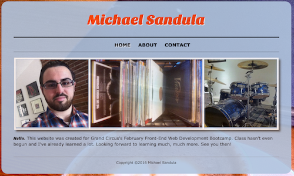
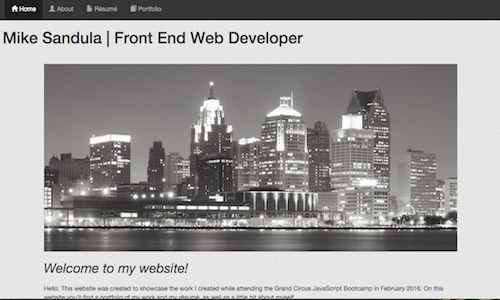
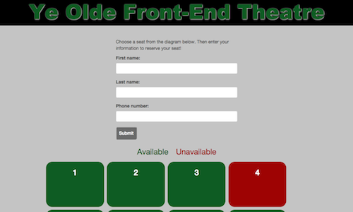

Blog
A plug for plug-ins
I'm only in Week 3 of my Front-End Developer Bootcamp, but I've already found the need to simplify my workflow. Plug-ins are a great way to do that. There are literally thousands of plug-ins and the ones you use will depend on the program(s) you use, as well as your personal preferences.
One such plug-in I really like is called Emmet. To download Emmet, go to emmet.io/download and select your text editor of choice (I use Sublime Text 2). Doing that will take you to a GitHub repository complete with step-by-step instructions particular to your text editor.
Once it's installed, start your stopwatch to keep track of how much time you save while coding HTML files. While Emmet doesn't reinvent the wheel, it certainly makes creating HTML files far less tedious. For example, you can create a div that has a unordered list, with three list items inside that, by typing the following, then pressing tab:
div>ul>li*3
If you think that's impressive, create an empty HTML file, type "!" then press tab (What does that do? Sorry, no spoilers). Again, by no means does Emmet reinvent the wheel, but it makes HTML file creation far quicker and easier so you can focus on the things that really matter. And while there are dozens of plug-ins and tools that are considerably more powerful, a few of which I've already glommed onto, I must admit it felt great to feel the need to simplify my workflow after only 10 days of bootcamp classes.
Happy coding!
Posted on: Feb. 17, 2016
About

My name is Michael Sandula. I'm 27 years old. I graduated from Oakland University in 2010 with a bachelor's degree in journalism. Since then, I've worked as a copy editor for a few places, most recently The Oakland Press. In February and March of 2016, I attended the Grand Circus Detroit JavaScript Bootcamp. When I'm not knee-deep in JavaScript, I can be found behind my drumset or buried in a book.
Portfolio
Here's a sampling of some of the work I created during Grand Circus Detroit's JavaScript Bootcamp.
Portfolio (Version 1)

This is the first draft of my portfolio, which was the first assignment for my JavaScript Bootcamp. It consists of HTML and CSS, as well as a little bit of JavaScript, as displayed on the Contact page.
View GitHub repository
Mad About Mad Men
A Mad Men fan site I created using Boostrap. The page features a Jumbotron that showcases a video clip, a Carousel of key series moments, a list of some of the show's characters and, of course, a cocktail menu.
View GitHub repository
Portfolio (Version 2)

The second go at my portfolio. It was built using Bootstrap, with a focus on responsive design. The Portfolio page included some involved hover effects that allowed for a detailed view of each thumbnail.
View GitHub repository
Seat reservation app

Was part of a four-person team that created a mock seat reservation app. The aim of the project was to make it interactive using JavaScript, while maintaining functional design.
View GitHub repository